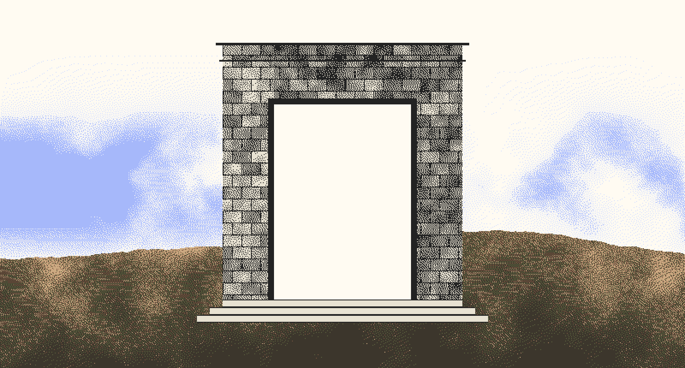

Project / NODUS
Learn from mistakes you never made.
Companies write down their failures and then repeat them. NODUS turns lessons from post-mortems into patterns of roles and relationships in a FalkorDB graph, and checks every new plan against them. When a plan takes the shape of a past failure, even in different words, it shows the old failure beside the plan and names the one step that would complete the repeat.
Why a graph
Text search finds lessons by what they sound like, and that is how a lessons database ends up unused. Two plans show the gap. A tariff-table refresh shares almost no words with the CrowdStrike and Cloudflare outages, but it skips the staged procedure others follow, rests on one automated check, and alerts a list nobody watches: one step from repeating them. A sensor content update shares many of their words, yet follows the canary procedure with human review and a watched on-call, so NODUS says nothing.
In NODUS a lesson is a subgraph pattern and finding an echo is pattern matching in FalkorDB. Without the graph there is nothing left to match.

What it does
- EchoesThe past failure and the new plan side by side, every condition with the sentence it was taken from.
- ForesightWhen one condition is missing, it names the remaining step that would complete the repeat, before it happens.
- SilencePoints out what is not recorded: no one watching the alerts, no owner.
- WitnessesInvites the person who warned last time, found by their role in the original episode.
- Unfinished melodyPlays a match as one note per condition, with the last note held back. Never autoplays.
- MemoryRecords what the team did about each echo, so every lesson builds a track record.
Result and build
On a test declared before any evaluation data existed, NODUS raised the right lesson for all 18 risky plans with no false alarms. Keyword search flagged every safe look-alike. The data is synthetic and generated from the same condition definitions the lessons use, so it shows the queries implement the lessons, not accuracy on real company data.
The site is Next.js on Vercel with the engine behind a small FastAPI service, next to a FalkorDB Cloud database. Each visitor gets their own copy of a made-up company.
Architecture
No AI writes a query that runs. Lessons are data, a deterministic compiler turns them into parameterized Cypher, and a person approves a lesson before it is used.
Lessons
- Post-mortemspublic and internal, quotes verified word for word
- Conditionspresent, absent, attribute, count
- Human approvalbefore a lesson is used
Matching
- Compilerwhitelisted labels, every value a parameter
- Anchor-first matchera role found once stays the same role
- Severity rulefull, foresight, strong, note
Agent
- Heads-upfilled from the match, never free text
- Witness inviteby role, never by graph distance
- Echo memoryheeded, dismissed with a reason, escalated
Notes
- The company and its plans are synthetic; the three seed lessons come from public post-mortems.
- Structure can’t see intent: a trivial change with the risky shape still gets a full echo.
- Built solo for Graph Hacks (FalkorDB × WeMakeDevs), October 2026.